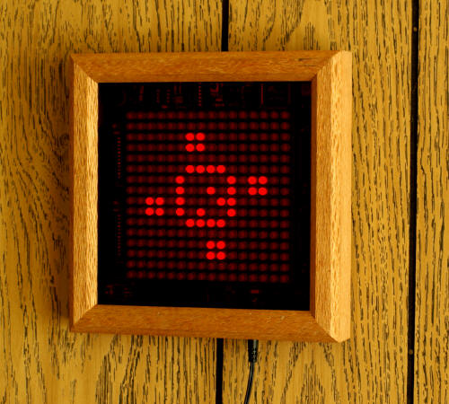
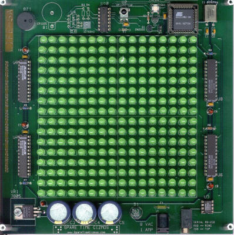
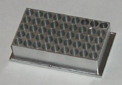

Life Game
Life Game

|
|
Read all about the Life Game in Circuit Cellar Ink Magazine!!A two part feature in the December 2004 and January 2005 issues! Download the original manuscript for this article.
Buy parts and kits for your own Life Game!
 The idea for this project began when I saw a screen saver on the Sun-2 (yes, that was a long time ago!) that played John Conway's Game of Life using little pictures of the Sun logo. John Conway, if you haven't heard of him, did a lot of thinking in the late 1960s about John von Neuman's earlier work on self replicating cellular automata. Conway elegantly simplified von Neuman's forty plus rule automata into one with only three rules, and in 1970 Martin Gardner wrote a piece on Conway in his Mathematical Games column in Scientific American magazine (October 1970, pp 120-123).Amazingly (although this was 1970, remember!) , Gardner describes how to play Life using a checker board. It didn't take long before somebody got the idea to use a computer, though, and the rest is history. Zillions of computer hours have been squandered on Life simulations, and countless beautiful patterns that grow, change and evolve over time have been discovered since then. My idea was to build a visual Life game that could hang on the wall, like any other work of art, but in this case the art would constantly change. The display is a 16x16 array of LEDs - rather small for LIFE, but 256 LEDs is a lot to solder! The CPU is an Intel 8051 class microprocessor with flash memory, and four Maxim MAX7219 chips drive the LED matrix. Since the device was to hang on the wall and the owner has no convenient way to push buttons or flip switches on the device itself, and I decided to use a conventional infrared remote control for input. The entire project appeared as a two part feature article in Circuit Cellar Ink magazine, issues #173 (December 2004) and #174 (January 2005). You can purchase reprints of these articles online from the Circuit Cellar Ink web page, or you may download my original manuscript for the article. ErrataOne error has been discovered in the original Circuit Cellar article - In Figure 1 of the January 2005 segment, ground is shown as DB-9F pin 7 and DB-25F pin 5. Those pin numbers are reversed - the DB-9F ground is pin 5 and the DB-25F ground is pin 7. The current firmware has a bug which causes the infrared receiver to fail when a Philips microprocessor is used. Everything else will work correctly; only the the infrared fails. This problem does not exist with the Atmel microprocessors. We're working on a software update which will fix this problem. BTW, if you order or already ordered a complete kit from Spare Time Gizmos, it always ships with the Atmel processor. There is one known error in revision C of the LIFE PC board - the silk screen outline for transistor Q1 is reversed. The correct way to install this transistor is with the flat side facing the LED array and the round side facing the edge of the PC board. If you have trouble programming your microprocessor then you might want to double check this transistor. There are several errors in the wiring of the RJ11 programming jack with revision B of the PC board, however this revision was only shipped to beta testers and never to customers. Contact us if you have a revision B board and we'll exchange it for a revision C. You can determine the revision of your PC board looking at the top (component) side in the upper left corner (near the buzzer BZ1). You'll see the letters "LIFE-5x" in the etch (copper), and the "x" is the revision letter of your PC board. Firmware
 One of the unique features of the Life Game is that the microprocessor used is "in system programmable" (aka ISP). Put simply, this means you can download firmware to the microprocessor without even having to remove it from the PC board! In fact, in this particular case you can download firmware directly from any RS-232 serial port on an ordinary Windows PC or Linux box. No special programmer hardware is required!Spare Time Gizmos and Dan Liddell, the original authors of the Life Game code, have decided to release the Life Game source code for "free" under the terms of the GNU Public License. These are the same licensing terms used by many open source projects, including Linux. The only special development tool you will need is an 8051 cross assembler, and many are available for free on the Internet. It is our hope that people will extend and share the firmware; we have lots of ideas for features that could be added, and there's plenty of room left in the microprocessor's ROM! LicensingAll LIFE Game files on this web page are Copyrighted 2004 by Spare Time Gizmos. All Life Game documentation files including, but not limited to, schematics and my original manuscript for the Circuit Cellar article, are released under the terms of the GNU Free Documentation License. Permission is granted to copy, distribute and/or modify these files under the terms of the GNU Free Documentation License, Version 1.1 published by the Free Software Foundation; with no invariant sections; with the front cover text "Portions Copyright (C) 2004 by Spare Time Gizmos" and our URL, and with no back cover text. The Life Game article as it appears in Circuit Cellar magazine is the property of that magazine and you must obtain their permission to copy, distribute or modify it. The Life Game firmware is released under under the terms of the GNU General Public License. Permission is granted to copy, distribute and/or modify these files under the terms of the GNU General Public License as published by the Free Software Foundation, version 2. Build Your Own
 There's a complete list of all the required parts in the article, including sources and part numbers for the more unusual ones, but if you don't want to or don't have time to do your own shopping, we'll be happy to sell you a complete kit of all the electronic parts required. Note that the complete kit does not include the LED tool or a cabinet (but you can order those separately) or the remote control. OrderingPlease read the Spare Time Gizmos store policies before ordering. Shipping charges shown are for the US only - international customers please inquire before ordering. Sales tax must be charged on all shipments to California addresses.
Free counters provided by Andale. |
Visit these Spare Time Gizmos
|

{kind=link}